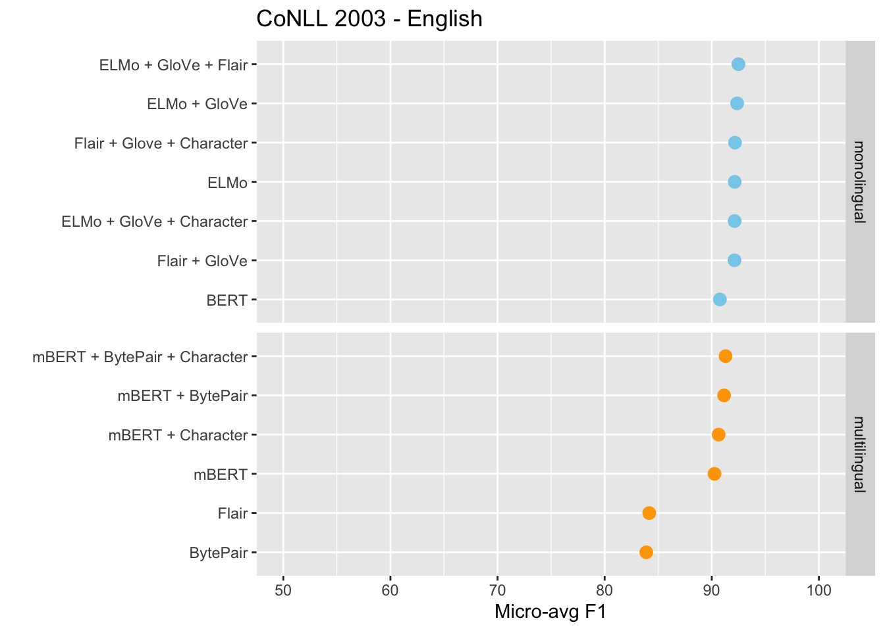
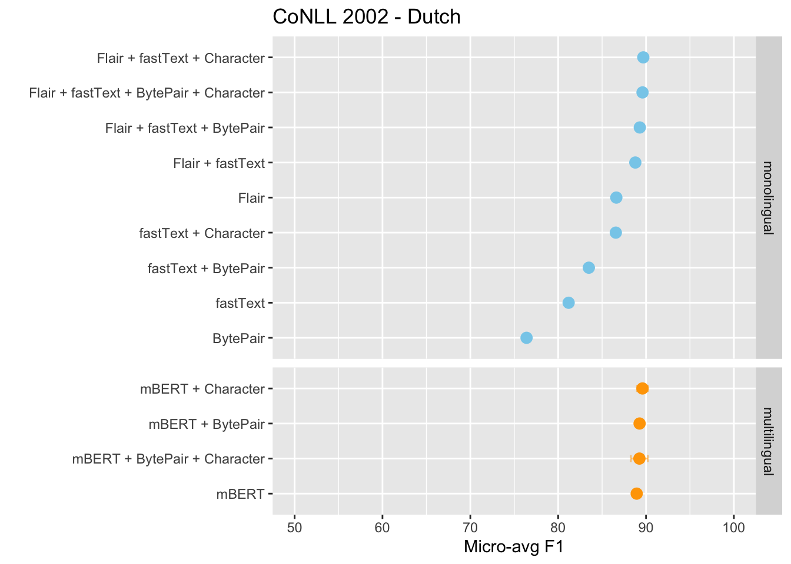
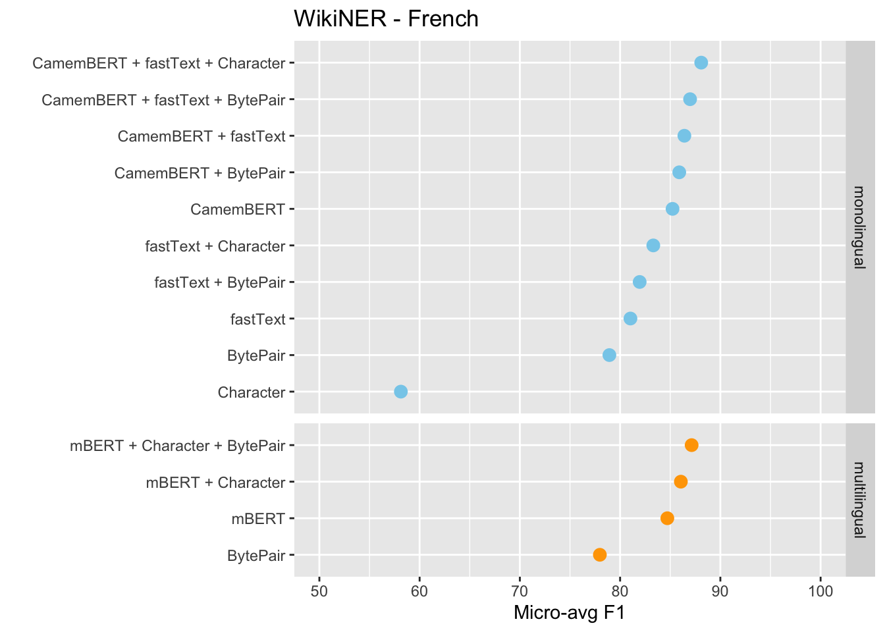
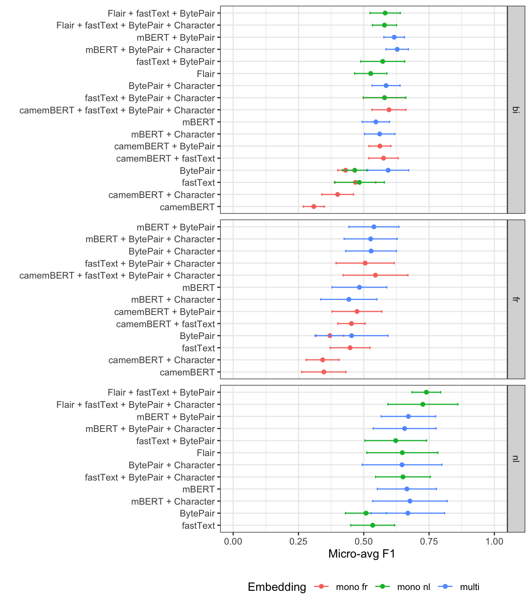
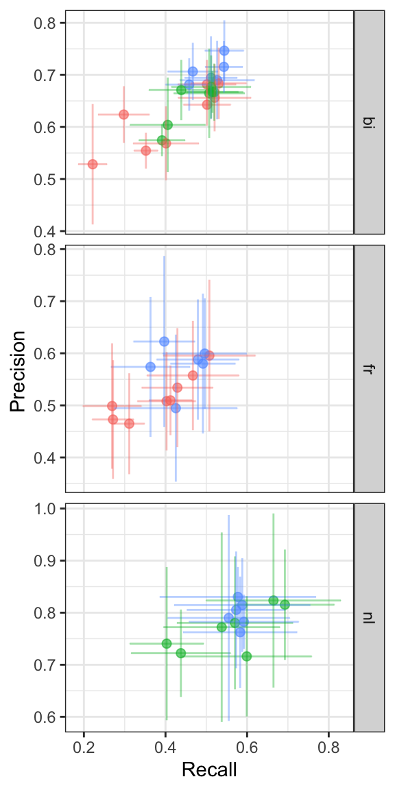

Chapter 6 Summary
The main goal of this thesis is to compare how the use of mono-lingual or multi-lingual contextualized word embeddings affect performance of a specific Named Entity Recognition (NER) task when applied on mono-lingual data (English, Dutch and French) and multilingual data.
Current state of art performance for NER tasks is achieved using a BiLSTM-CRF classifier (Bidirectional LSTMS with a Conditional Random Fields decoding layer). This architecture will be used for the NER pipelines in this thesis. The BiLSTM-CRF input (i.e. the word representations) was generated using different pre-trained language models that output monolingual or multilingual contextualized embeddings. It has been shown that NER performance based on state of the art contextualized word embeddings can often be improved when the BiLSTM-CRF input is a concatenation of the contextualized embedding vectors together with pre-computed fixed word embeddings like GloVe or fastText. These so-called “stacked” embeddings have shown to result in state of the art performance on NER tasks, and will be tested as well.
A brief summary of the different embeddings used in this thesis is given below
df <- data.frame(
embedding = c("GloVe", "BytePair monolingual", "fastText",
"ELMo", "Flair", "BERT", "CamemBERT", "BytePair multi", "mBERT", "mFlair"),
language = c("En", rep("En/Fr/Nl", 2), "En", "En/Nl", "En", "Fr", rep("multilingual", 3)),
type = c(rep("monolingual", 7), rep("multilingual", 3)),
contextualized = c(rep("No", 3), rep("Yes", 4), "No", rep("Yes", 2))
)
knitr::kable(df, booktabs=T, caption="Overview of the primary embedding types used in this thesis. In addition, different combinations of these embeddings were constructed by concatenating different embeddings into a single embedding vector. Also, some pipelines included character embeddings (i.e. representations as trainable parameters of the BiLSTM-CRF model.")| embedding | language | type | contextualized |
|---|---|---|---|
| GloVe | En | monolingual | No |
| BytePair monolingual | En/Fr/Nl | monolingual | No |
| fastText | En/Fr/Nl | monolingual | No |
| ELMo | En | monolingual | Yes |
| Flair | En/Nl | monolingual | Yes |
| BERT | En | monolingual | Yes |
| CamemBERT | Fr | monolingual | Yes |
| BytePair multi | multilingual | multilingual | No |
| mBERT | multilingual | multilingual | Yes |
| mFlair | multilingual | multilingual | Yes |
First, the different embeddings were evaluated on well-known human-annotated benchmark datasets for NER tasks.
df <- data.frame(
language = c("En", "Nl", "Fr"),
dataset = c("CoNLL-2003", "CoNLL-2002", "WikiNER"),
corpus = c("News articles (Reuters)", "News articles (De Morgen)", "Wikipedia 2008"),
sentences = c(14041+3250+3453, 15802+2895+5194, 10713+1190+1323),
tokens=c(203621+51362+46435, 199969+37687+68466, 279729+34824+30991)
)
knitr::kable(df, booktabs=T)| language | dataset | corpus | sentences | tokens |
|---|---|---|---|---|
| En | CoNLL-2003 | News articles (Reuters) | 20744 | 301418 |
| Nl | CoNLL-2002 | News articles (De Morgen) | 23891 | 306122 |
| Fr | WikiNER | Wikipedia 2008 | 13226 | 345544 |
The CoNLL datasets contain roughly 20.000 sentences (~300.000 tokens), state of the art F1-score for the English and Dutch dataset is ~93% and 90%, respectively. The state of the art for the French WikiNER is ~95%, but this dataset is much larger as compared to the CoNLL datasets. For practical reasons, this dataset was randomly downsampled (by a factor 0.10) to roughly the same size as the English and Dutch datasets. The CoNLL datasets are available as separate train, validation and test sets (~70/15/15), random splitting was used for the downsampled WikiNER dataset.
For the implementations of the different models, the Flair library1 was used. The NER classifier model and hyperparameters were the same for all embedding types and based on the best known configuration2 for the CoNLL tasks as reported by the authors of the Flair library, i.e. a BiLSTM classifier with 256 hidden states and a CRF decoding layer. Weights were initialized using Xavier normal initialization3, training was done using SGD with a mini-batch size of 32. The initial learning rate was 0.1, when the validation set F1-score did not improve for 3 consecutive epochs, the learning rate was annealed by a factor 0.5. Training was stopped when the learning rate dropped below 0.0001 or after 100 epochs. The final model was refitted on the training and validation set and extra-sample performance was estimated using the held-out test set. To allow easy comparison with the results reported in literature, the micro-average F1-score was obtained by computing the average of the F1 score for every entity class, weighted by the number of instances per entity class.
## [1] "/Users/arthur/Documents/MASTAT/Thesis/THESIS/MASTAT_thesis"lang <- c('en', 'nl', 'fr')
files <- paste0("Model_overview - ", lang, ".csv")
DIR <- "data/raw/benchmark"
df <- c()
for (f in files) {
df <- rbind(
df,
read_csv(file.path(DIR, f), col_types = cols(date = col_datetime(format = "%d-%m-%Y")))
)
}
df <- df %>%
filter(!is.na(f1))
summ <- df %>%
group_by(embedding_type, embedding_lang, dataset_lang, downsample_factor) %>%
summarise(
mean_f1 = mean(f1),
n = n(),
n_str = paste0(" (n=", n(), ")"),
lab = paste0(
round(mean_f1, 2),
ifelse(n > 1, n_str, "")),
sd = sd(f1)
)en <- summ %>%
filter(dataset_lang == "en") %>%
arrange(desc(mean_f1)) %>%
arrange(embedding_lang, desc(mean_f1))
ggplot(en, aes(reorder(embedding_type, mean_f1), mean_f1, color=embedding_lang)) +
geom_point(size=3) +
geom_errorbar(aes(ymin = mean_f1 - sd, ymax=mean_f1 + sd), width=0.2, alpha=0.5) +
facet_grid(rows=vars(embedding_lang), space = "free", scales = "free") +
coord_flip() +
ggtitle("CoNLL 2003 - English") +
scale_color_manual(values = c("skyblue", "orange")) +
ylab("Micro-avg F1") + xlab("") +
scale_y_continuous(limits = c(50, 100)) +
theme(legend.position = "none")
en_table <- en %>%
ungroup() %>%
mutate(multi = ifelse(embedding_lang == "monolingual", "No", "Yes")) %>%
mutate(mean_f1 = round(mean_f1, 1),
sd = ifelse(is.na(sd), "", round(sd, 1))) %>%
select(embedding_type, multi, mean_f1, n, sd)
knitr::kable(en_table, booktabs=T,
col.names = c("Embedding", "Monolingual", "F1", "n", "sd"),
caption = "Estimated extra-sample performances (micro-average F1-score) of different monolingual and multilingual embeddings on the English CoNLL 2003 NER task (BiLSTM-CRF classifier)")| Embedding | Monolingual | F1 | n | sd |
|---|---|---|---|---|
| ELMo + GloVe + Flair | No | 92.5 | 1 | |
| ELMo + GloVe | No | 92.4 | 3 | 0.1 |
| Flair + Glove + Character | No | 92.2 | 1 | |
| ELMo | No | 92.1 | 3 | 0.1 |
| ELMo + GloVe + Character | No | 92.1 | 1 | |
| Flair + GloVe | No | 92.1 | 1 | |
| BERT | No | 90.8 | 2 | 0.2 |
| mBERT + BytePair + Character | Yes | 91.3 | 1 | |
| mBERT + BytePair | Yes | 91.2 | 3 | 0.2 |
| mBERT + Character | Yes | 90.6 | 3 | 0.3 |
| mBERT | Yes | 90.3 | 2 | 0 |
| Flair | Yes | 84.2 | 1 | |
| BytePair | Yes | 83.9 | 1 |
nl <- summ %>%
filter(dataset_lang == "nl") %>%
arrange(embedding_lang, desc(mean_f1))
ggplot(nl, aes(reorder(embedding_type, mean_f1), mean_f1, color=embedding_lang)) +
geom_point(size=3) +
geom_errorbar(aes(ymin = mean_f1 - sd, ymax=mean_f1 + sd), width=0.2, alpha=0.5) +
facet_grid(rows=vars(embedding_lang), space = "free", scales = "free") +
coord_flip() +
ggtitle("CoNLL 2002 - Dutch") +
scale_color_manual(values = c("skyblue", "orange")) +
ylab("Micro-avg F1") + xlab("") +
scale_y_continuous(limits = c(50, 100)) +
theme(legend.position = "none")
nl_table <- nl %>%
ungroup() %>%
mutate(multi = ifelse(embedding_lang == "monolingual", "No", "Yes")) %>%
mutate(mean_f1 = round(mean_f1, 1),
sd = ifelse(is.na(sd), "", round(sd, 1))) %>%
select(embedding_type, multi, mean_f1, n, sd)
knitr::kable(nl_table, booktabs=T,
col.names = c("Embedding", "Monolingual", "F1", "n", "sd"),
caption = "Estimated extra-sample performances (micro-average F1-score) of different monolingual and multilingual embeddings on the Dutch CoNLL 2002 NER task (BiLSTM-CRF classifier)")| Embedding | Monolingual | F1 | n | sd |
|---|---|---|---|---|
| Flair + fastText + Character | No | 89.7 | 1 | |
| Flair + fastText + BytePair + Character | No | 89.6 | 1 | |
| Flair + fastText + BytePair | No | 89.3 | 1 | |
| Flair + fastText | No | 88.8 | 1 | |
| Flair | No | 86.6 | 1 | |
| fastText + Character | No | 86.6 | 1 | |
| fastText + BytePair | No | 83.5 | 1 | |
| fastText | No | 81.2 | 1 | |
| BytePair | No | 76.4 | 1 | |
| mBERT + Character | Yes | 89.6 | 2 | 0.6 |
| mBERT + BytePair | Yes | 89.3 | 4 | 0.3 |
| mBERT + BytePair + Character | Yes | 89.2 | 2 | 1 |
| mBERT | Yes | 88.9 | 3 | 0.3 |
fr <- summ %>%
filter(dataset_lang == "fr") %>%
arrange(desc(mean_f1)) %>%
arrange(embedding_lang, desc(mean_f1))
ggplot(fr, aes(reorder(embedding_type, mean_f1), mean_f1, color=embedding_lang)) +
geom_point(size=3) +
geom_errorbar(aes(ymin = mean_f1 - sd, ymax=mean_f1 + sd), width=0.2, alpha=0.5) +
facet_grid(rows=vars(embedding_lang), space = "free", scales = "free") +
coord_flip() +
ggtitle("WikiNER - French") +
scale_color_manual(values = c("skyblue", "orange")) +
ylab("Micro-avg F1") + xlab("") +
scale_y_continuous(limits = c(50, 100)) +
theme(legend.position = "none")
fr_table <- fr %>%
ungroup() %>%
mutate(multi = ifelse(embedding_lang == "monolingual", "No", "Yes")) %>%
mutate(mean_f1 = round(mean_f1, 1),
sd = ifelse(is.na(sd), "", round(sd, 1))) %>%
select(embedding_type, multi, mean_f1, n, sd)
knitr::kable(fr_table, booktabs=T,
col.names = c("Embedding", "Monolingual", "F1", "n", "sd"),
caption = "Estimated extra-sample performances (micro-average F1-score) of different monolingual and multilingual embeddings on the French WikiNER task (BiLSTM-CRF classifier, WikiNER dataset downsampled to 10%)")| Embedding | Monolingual | F1 | n | sd |
|---|---|---|---|---|
| CamemBERT + fastText + Character | No | 88.1 | 1 | |
| CamemBERT + fastText + BytePair | No | 87.0 | 1 | |
| CamemBERT + fastText | No | 86.4 | 1 | |
| CamemBERT + BytePair | No | 85.9 | 1 | |
| CamemBERT | No | 85.2 | 1 | |
| fastText + Character | No | 83.3 | 1 | |
| fastText + BytePair | No | 82.0 | 1 | |
| fastText | No | 81.0 | 1 | |
| BytePair | No | 78.9 | 1 | |
| Character | No | 58.1 | 1 | |
| mBERT + Character + BytePair | Yes | 87.1 | 2 | 0.2 |
| mBERT + Character | Yes | 86.1 | 1 | |
| mBERT | Yes | 84.7 | 1 | |
| BytePair | Yes | 78.0 | 2 | 0.1 |
Different variations of the BERT base model (cased) (such as BERT base uncased and BERT small or variations on BERT’s transformer architecture like RoBERTa, distilBERT and ALBERT) and different versions of ELMo large (like ELMo small and ELMo original) were tested as well but were not included in this overview since they were found to reduce performance. These smaller models might however be useful when computational resources are limited, e.g. the ELMo large model (shown in this plot) requires ~3 times the training time of the ELMo small model, with a performance gain (F1-score) of “only” 2% points (from ~90% to ~92%)).
The obtained scores are similar to the benchmarks reported in literature for the CoNLL 2002 and CoNLL 2003 datasets. Since most of NLP research is focused on the English language and many of the state of the art language models are pretrained predominantly on (monolingual) English corpora, it is not surprising that overall NER classification performance is best for the English dataset. Monolingual (English) language models such as ELMo and Flair appear to yield excellent (contextualized) word representation for downstream NER classification, especially when they are concatenated with either fixed word or subword embeddings such as GloVe or fastText. While the English monolingual embeddings are superior to the multilingual embeddings, the difference is suprisingly small, especially for the multilingual BERT (mBERT) model. For French or Dutch NER, the difference is even smaller or absent, with mBERT-based embeddings providing state-of-the-art results. The mBERT model is a large transformer-based language model that has been pre-trained on 104 languages without any cros-lingual supervision. While the mBERT embeddings have been shown to encode some language information (i.e. they are not entirely language-independent cross-lingual semantic representations), they do perform surprisingly well on so-called zero-shot cross-lingual transfer (e.g. training a NER model using mBERT respresentations on an English NER dataset and applying the trained NER model on a Dutch NER task). This indicates that mBERT has at least some ability to generalize away from specific language, and might explain why the Dutch or French NER models seem to benefit from mBERT model’s knowledge of many - especially resource-rich - languages such as English.
After the implementations of the different models were validated on these datasets, some of the best performing embeddings (i.e. essentially those that are described in table 1 above) were tested on a 2 “real-world” Faktion datasets, both consisting of OCR data from document scans of relatively poor quality. E.g. many of the tokens consisted of single characters or only punctuation, resulting in relatively long sequences and many tokens with very little semantic information. Since the input sequence length of some of the language models used to obtain contextualized word embeddings (i.e. the BERT models) is limited, the average sequence lengths of the Faktion datasets were reduced by removing all tokens that consisted only of punctuation. Another difference with the benchmark datasets described earlier is the number of NER labels to predict: while there were 4 different entity labels in the CoNLL datasets, there was only a single category in the Dutch dataset, and only 2 categories in the French datasets, with the vast majority (~ 95%) of all entities belonging to a single category. Also, none of the datasets were strictly monolingual, the language was decided on the dominant language. A thirth dataset was created by merging the two “monolingual” datasets:
# figures are for train/dev/test (summed)
df <- data.frame(
lang = c("Dutch", "French", "Bilingual"),
documents = c(36, 152, 188),
prop_bi = c(round(21/36, 2), round(14/152, 2), ""),
tokens=c(2762 + 923 + 787, 9587+3384+3140, 12224+4264+4095)
)
knitr::kable(df, booktabs=TRUE, col.names = c("Language", "# documents", "Proportion of bilingual documents", "Tokens"))| Language | # documents | Proportion of bilingual documents | Tokens |
|---|---|---|---|
| Dutch | 36 | 0.58 | 4472 |
| French | 152 | 0.09 | 16111 |
| Bilingual | 188 | 20583 |
Given the differences between the benchmark and the Faktion datasets, the NER model and training procedure was adjusted slighty. A BiLSTM-CRF model with 32 hidden units was used, mini-batch size was reduced to 8 and the annealing factor for the learning rate was increased to 0.8. The final model was refitted on the training and validation set and extra-sample performance was estimated using the held-out test set. Given the nature of the dataset and, hence, the expected inprecision of the estimated extra-sample error, the procedure was repeated 5 times on independent random splits of the data (60/20/20). Results given below are reported as (mean ± sd).
lang <- c('nl', 'bi', 'fr')
files <- paste0("Model_overview - faktion_", lang, ".csv")
DIR <- "data/raw/faktion"
df <- c()
for (f in files) {
df <- rbind(
df,
read_csv(file.path(DIR, f), col_types = cols(date = col_datetime(format = "%d-%m-%Y")))
)
}
df <- df %>%
filter(!is.na(f1)) %>%
filter(embedding_type != 'Character')
# reference data Faktion
ref <- data.frame(
embedding_type = c(rep("oldNLP", 2), rep("newNLP_crf_nobilou", 3),
rep("newNLP_crf_bilou", 3), rep("newNLP_nocrf_bilou", 3)),
ds = c(rep(c("fr", "nl", "bi"), 4))[-12],
data = c(rep(c("Faktion", "Faktion", "Faktion"), 4))[-12],
recall=c(0.17, 0.02,0.23,0.05,0.27,0.25,0.1,0.52,0.3,0.1,0.57),
precision=c(0.53,0.33,0.41,0.17,0.75,0.45,0.4,0.77,0.43,0.25,0.76),
f1=c(0.26,0.04,0.29,0.07,0.4,0.32,0.15,0.62,0.35,0.14,0.44)
)
summ <- df %>%
group_by(ds, embedding_type, embedding_lang) %>%
summarise(
mean_f1 = mean(f1),
sd_f1 = sd(f1),
mean_precision = mean(precision),
sd_precision = sd(precision),
mean_recall = mean(recall),
sd_recall = sd(recall),
mean_accuracy = mean(accuracy),
sd_accuracy = sd(accuracy),
n = n()
)
ggplot(summ, aes(reorder(embedding_type, mean_f1), mean_f1,
color=embedding_lang)) +
geom_point() +
geom_errorbar(aes(ymin = mean_f1 - sd_f1, ymax=mean_f1 + sd_f1), width=0.2) +
coord_flip() +
scale_y_continuous(limits=c(0, 1)) +
xlab("") +
facet_grid(rows=vars(ds), scales = 'free', space="free") +
theme_bw() +
theme(legend.position = "bottom") +
scale_shape_manual(name="Sampling factor", values=c(4, 18, 20)) +
scale_color_discrete(name="Embedding") +
scale_size_continuous(name="# runs") +
ylab("Micro-avg F1 ")
As expected, performance was much lower as compared to the benchmark datasets. However, there seems to be a clear advantage of using pretrained language models to provide (contextualized) word embeddings. Indeed, fixed (sub)word embeddings such as monolingual BytePair or fastText embeddings performed poorly. On the other hand, performance clearly benefitted from concatenating these fixed (sub)word representations to the contextualized word vectors obtained from pretrained language models (e.g. Dutch Flair, French camemBERT or multilingual BERT (mBERT)). Further increasing the dimensionality of the embedding vectors with trainable representations (i.e. vectors that are randomly initialized and treated as parameters of the BiLSTM-CRF model) generally improved the performance on the NER task further.
Overall, performance on the (predominantly) Dutch dataset appears to be better, but direct comparison in terms of the F1 score Comparing overall performance between the Dutch and French datasets is difficult, given the differences in the number of entity classes and, hence, the associated difficulty of the prediction task. Relatively high-dimensional concatenations of different monolingual embedding vectors appeared to perform best, on average, for the “monolingual” datasets: the concatenation of camemBERT, French fastText and BytePair subword and trainable character embeddings for French (F1 = 0.54 ± 0.12), and the concatenation of Dutch Flair, Dutch fastText and Dutch BytePair embeddings for the Dutch dataset (F1 = 0.74 ± 0.05). However, the differences with the multilingual embeddings are negligible. Not surprisingly, for the bilingual dataset, multilingual embeddings (e.g. concatenated mBERT, multilingual BytePair subword and trainable character embeddings) seem to outperform monolingual embeddings.
The differences of the monolingual and multilingual embeddings for each dataset in terms of precision and sensitivity are visualize below:
ggplot(summ, aes(mean_recall, mean_precision, color=embedding_lang, label=embedding_type)) +
#geom_text(size=3) +
geom_point(size=2, alpha=0.6) +
geom_errorbarh(aes(xmin = mean_recall - sd_recall, xmax=mean_recall + sd_recall), alpha=0.4) +
geom_errorbar(aes(ymin = mean_precision - sd_precision, ymax=mean_precision + sd_precision), width=0, alpha=0.4) +
# scale_x_continuous(limits=c(0, 1)) +
# scale_y_continuous(limits = c(0, 1)) +
facet_grid(rows=vars(ds), space="free", scales="free") +
theme_bw() +
#geom_point(data = ref, aes(recall, precision), color="black") +
theme(legend.position = "none") +
xlab("Recall") +
ylab("Precision")
https://github.com/flairNLP/flair/blob/master/resources/docs/EXPERIMENTS.md↩
Understanding the difficulty of training deep feedforward neural networks - Glorot, X. & Bengio, Y. (2010)↩